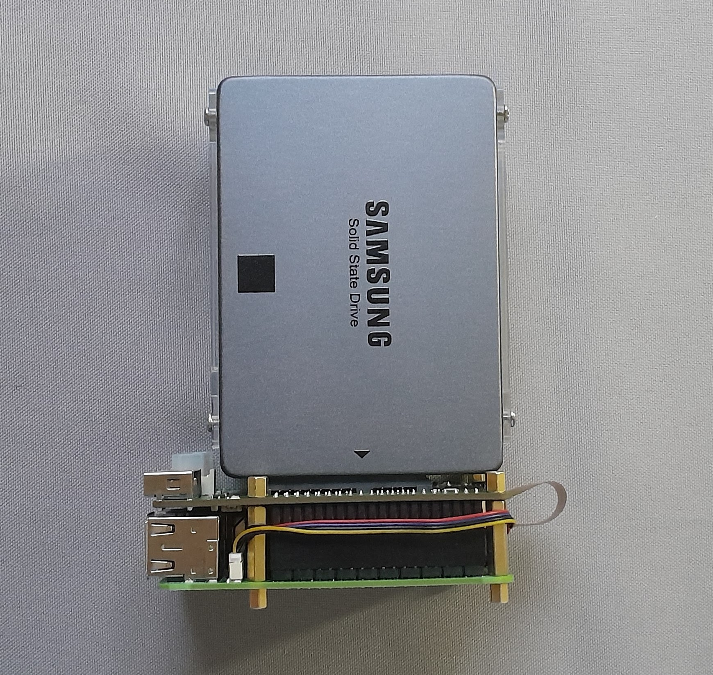
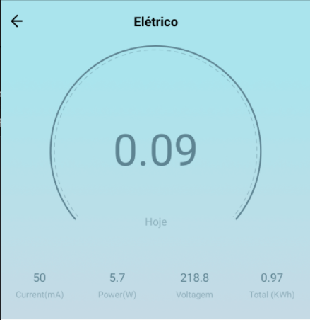

Porque montar um servidor em casa? Bom... pode ser uma das coisas mais divertidas e educativas que você pode fazer, se gosta de tecnologia.
Esse foi meu primeiro servidor e pesquisei muito antes de comprar os componentes e a melhor opção que encontrei foi usar um Raspberry Pi 5, devido ao baixo consumo de energia (vou mostrar exatamente o consumo no final), relação custo/processamento boa e vasta documentação e compatibilidade com bibliotecas e periféricos.
Esperei ansiosamente pelos componentes, alguns vindos da China, e finalmente iniciei a montagem.
O Raspberry Pi 5 de 16Gb foi uma escolha onde busquei equilibrar desempenho, custo, consumo energético e tamanho. O Raspberry Pi é do tamanho de um cartão de crédito e o consumo do meu sistema ficou em média em apenas 6W. (Uso a Tomada Inteligente Wifi Novadigital 10A para fazer a medição)
Quanto a desempenho, para o que eu montei ficou sobrando bastante memória, eu acredito que o de 8Gb daria conta tranquilo e talvez até um Raspberry Pi 4, caso queira reduzir os custos.
Meu sistema tem rodado com 6% da memória RAM e o uso de CPU dá alguns picos, porém fica quase todo tempo abaixo de 5% também.
O Penta Sata Hat é um Hat que permite conectar até 5 SSDs ou HDDs no Raspberry Pi. Ele é bem fácil de instalar e vem com tudo que você precisa, incluindo o flat cable e espaçadores.
No meu caso ele quem permite transformar meu servidor em um NAS. Na documentação você encontra o passo a passo de instalação de hardware e software, que é bem tranquilo. O único ponto mais chatinho é o conector do flat, mas vem até um extra, caso acabe estragando um na instalação.
O Argon THRML é um cooler ativo para o Raspberry Pi 5, que ajuda a manter a temperatura baixa, especialmente quando está rodando com carga alta. Ele é fácil de instalar e vem com tudo que você precisa, incluindo os termopads, o cabo de conexão e instruções impressas no interior da embalagem.
Eu escolhi esse cooler porque o oficial do Raspberry Pi não cabe corretamente quando montado com o Penta Sata Hat.
Bom, esse item não tem muito segredo. O cartão microSD é usado para instalar o sistema operacional e armazenar os dados do Raspberry Pi. Eu escolhi um de 64GB, que é suficiente para o meu uso, mas você pode escolher um maior se precisar de mais espaço. Lembrando que aqui eu ainda tenho os SSDs para armazenamento.
Qaundo instalamos o Penta Sata Hat, podemos escolher entre 3 tipos de alimentação: USB-C 5V original do Raspberry Pi; Molex 12V do Penta Sata Hat; ou Jack 12V do Penta Sata Hat.
O único ponto de atenção é usar somente uma das três, e nunca mais de uma ao mesmo tempo. Também é importante checar a potência que seu sistema vai consumir. O raspberry pede uma fonte de 27W, caso use HDDs eles podem consumir mais potência, além de fans e ventiladores externos que também podem consumir um pouco, dependendo da escolha.
No meu caso, eu escolhi uma fonte comum Jack 12V 5A, similar a de laptops, camêras de segurança, etc, e que me dá uma potência nominal de 60W. Isso é mais que suficiente, pois como mostrei no início meu sistema esta consumindo cerca de 6W.
Usei os dois SSDs Samsung pra serem meu armazenamento principal. Eu escolhi esses, pois achei um preço excelente custo/benefício. Eu usei os dois SSDs de 4Tb em RAID 1, ou seja, um espelhando o outro, assim meu armazenamento total fica de 4Tb redundantes e não de 8Tb.
Quanto a velocidade, eles tem uma leitura de 560Mb/s e escrita de 530Mb/s, que são ótimas pro meu cenário.
Esse SSD eu já tinha em casa, então decidi usá-lo como armazenamento secundário. Ele é um Kingston de 240Gb e eu decidi usar ele mais para armazenar os arquivos de configuração e coisas assim, mas foi só porque estava aqui parado mesmo.
Finalmente o cooler 12V PWM. Eu montei uma case e para isso usei esse cooler pra circulação de ar dentro dela. Eu tentei usar um 12V de 60mm sem PWM, mas ficou muito barulhento, e os PWM de 5V eram muito caros, então o que achei com melhor custo/benefício foi esse de 12V PWM 80mm.
Como eu usei a alimentação Jack 12V, o Molex acaba virando uma saída 12V, então eu usei ele para alimentar o 12V do cooler e usei o pino 8 da interface disponível na parte de cima da placa do Penta Sata Hat para o PWM. Eu usei como referência a documentação da placa Sata Hat Top Board.
Usei um conector molex de uma fonte antiga para facilitar a ligação dele e na interface do PWM, soldei o fio diretamente no conector.
Com tudo em mãos e ajuda da documentação a montagem foi bem tranquila.
Agora vamos pra parte de software.
Agora a parte de software, também vou listar rapidinho o que está rodando no meu servidor e depois venho esplicando tudo com os comandos e prints.
Com poucos comandos, o NAS já estava acessível em todos os meus dispositivos!
Além de servir arquivos, personalizei o NAS com um painel web simples para monitorar o uso do disco e a temperatura do Raspberry. Também adicionei LEDs ao case para indicar atividade do HD. Foi um projeto divertido e educativo!